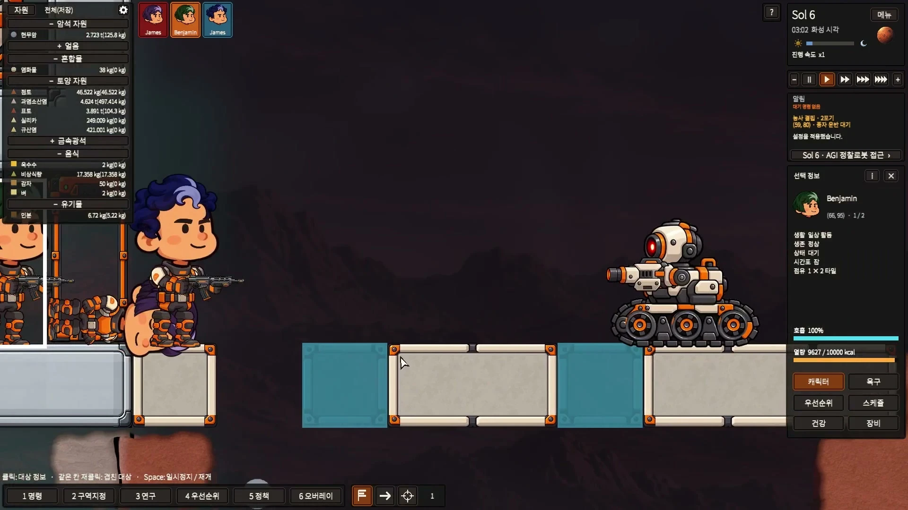
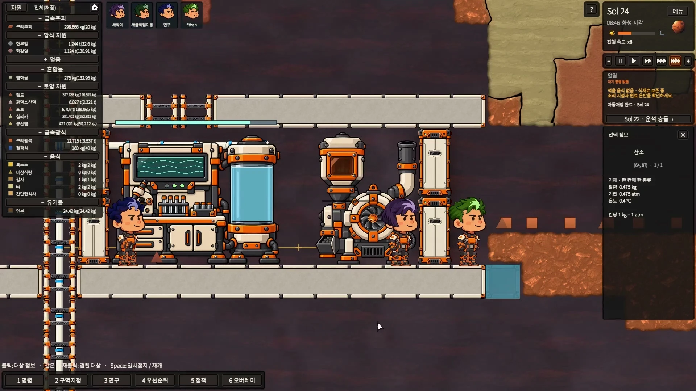

Survival includes defending your home
The 0.4 series connects colony survival with individual combat. Colonists can be drafted, moved as a group and assigned targets. Weapons, retaliation and avoidance policies, raiders and AGI scouts now give the settlement threats beyond food and oxygen.
Injuries affect six body regions. Rescuing a fallen colonist and caring for them in a medical bed is part of the same colony story. Combat and event balance remain an active development focus.
Machines with a shared visual language
Compact colonists and orange-and-ivory machinery now share a stronger illustrated style. Furnaces, pumps, research stations and life-support equipment use moving parts, lights and gauges to show their activity.

Next in 0.4.4: room to unwind
A wall-mounted TV and a treadmill add new rest activities. Completing an hour of use provides a temporary happiness benefit. This update also refines airlocks and liquid tanks, restores the correct hydroponic crop choices and makes hostile units easier to identify.
Toward Early Access 0.5
Our next focus is keeping a colony viable over longer sessions: resource circulation, stability, balance and opportunities to interact with friendly factions. Trade and orbital supply are planned directions, not promises of a fixed release date.
The game supports Korean, English, Simplified Chinese, Russian and Spanish interfaces. Translation quality and layout continue to improve alongside gameplay.
Wishlist Ares Program on Steam ↗